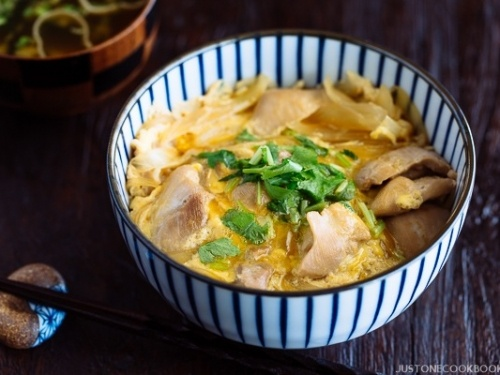

Oyakodon (Chicken and Egg Rice Bowl)

Description
This is a Oyakodon (Chicken and Egg Rice Bowl) recipe page.
The image and recipe steps are sourced from this article.
Ingredients
Kombu Dashi and Tare
- 2 cups uncooked jasmine rice
- 4 cups water
- 4 skinless, boneless chicken thighs, cut into small pieces
- 1 onion, cut in half and sliced
- 2 cups dashi stock, made with dashi powder
- ¼ cup soy sauce
- 3 tablespoons mirin (Japanese rice wine)
- 3 tablespoons brown sugar
- 4 eggs
Steps
- Rinse the rice in 3 to 4 changes of water until the rinse water is almost clear, and drain off the rinse water. Bring the rice and 4 cups of water to a boil in a saucepan over high heat. Reduce heat to medium-low, cover, and simmer until the rice is tender and the liquid has been absorbed, 20 to 25 minutes.
- Place the chicken in a nonstick skillet with a lid, and cook and stir over medium heat until the chicken is no longer pink inside and beginning to brown, about 5 minutes. Stir in the onion, and cook and stir until the onion is soft, about 5 more minutes. Pour in the stock, and whisk in soy sauce, mirin, and brown sugar, stirring to dissolve the sugar. Bring the mixture to a boil, and let simmer until slightly reduced, about 10 minutes.
- Whisk the eggs in a bowl until well-beaten, and pour over the chicken and stock. Cover the skillet, reduce heat, and allow to steam for about 5 minutes, until the egg is cooked. Remove from heat.
- To serve, place 1 cup of cooked rice per bowl into 4 deep soup bowls, top each bowl with 1/4 of the chicken and egg mixture, and spoon about 1/2 cup of soup into each bowl.